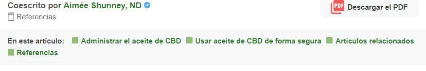
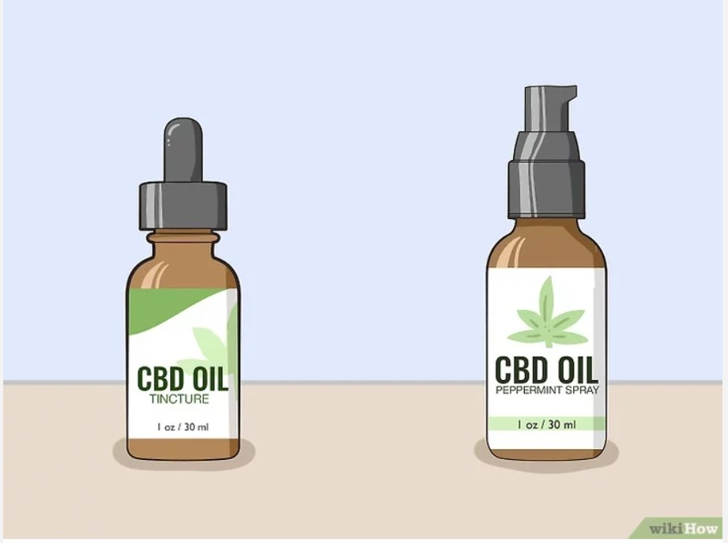
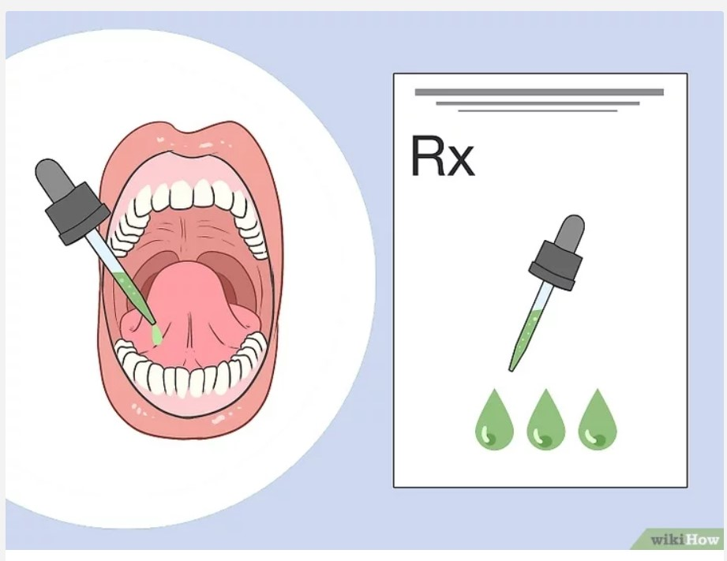

Cómo consumir aceite de cannabidiol de forma sublingual  El cannabidiol (CBD) es un compuesto natural que se encuentra en las plantas de cáñamo y marihuana. A diferencia del tetrahidrocannabinol (THC), el otro componente activo de la marihuana, el aceite de CBD no te drogará. Sin embargo, las primeras investigaciones muestran que puede tener diversos beneficios para la salud, como la reducción del dolor, la ansiedad, las náuseas y el insomnio.[1] Si bien hay varias maneras de consumir este aceite, una de las más seguras y eficaces es con una tintura por debajo de la lengua.[2] Antes de usarla, consulta con el médico sobre la mejor dosis y si puedes consumirla de forma segura. Administrar el aceite de CBD  1.-Elige una tintura si quieres consumir el CBD de forma sublingual. 2.-No comas antes o después de usarla.  3.-Aplica la cantidad recomendada de gotas debajo de la lengua. 4.-Mantén las gotas en la boca por 30 segundos antes de ingerirlas. 5.-Sentirás los resultados en 15 a 30 minutos.